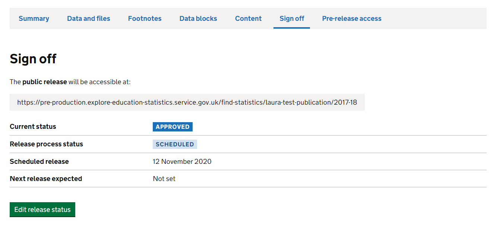

Routes for publishing
Guidance for how to publish different types of statistics
Routes for publishing
Explore education statistics (EES) is the Department’s statistics dissemination platform, designed to make DfE’s published statistics and data easier to find, access, use and understand.
The platform moved into Public Beta in March 2020 and is the home of all published official statistics from DfE. Some management information is also made available on the service too.
More information on why EES was introduced and the functionality within the platform can be found in these slides.
- All national, official and ad-hoc statistics should be published on EES
- Management Information should be published on GOV.UK
- Interactive dashboards built for particular user needs can be published separately, but should have a linked publication on either EES or GOV.UK
The following table outlines the key differences between publishing via EES and the old method via GOV.UK
| Statistics collections on GOV.UK | Explore education statistics |
|---|---|
| Statisticians request pdf and excel files are uploaded to release pages on gov.uk | Statisticians load csv data files on to the service and use them to build release pages |
| Release attachments are reviewed and approved via emails | Releases are reviewed and approved within the service |
| Release attachments are circulated for pre-release via email 24hours prior to publication date | Pre-release users are invited to preview releases within the service 24 hours prior to publication date |
If you are unsure which route to use for publication please contact the HoP Office.
EES
All national, official and ad-hoc statistics should be published on EES. This section covers how to start publishing on EES and all the things you need to consider before publication. For more detailed guidance on how to use the platform, visit our EES guidance page
How to publish
Publication checklist
Before releasing statistics for the first time you may want to discuss the new process with key stakeholders and / or pre-release users to make them aware of the new service. You should also inform the explore education statistics platforms team and Statistics HoP Office.
Before you start creating a release in the platform you should have:
- Announced the upcoming release via GOV.UK
- Sent metadata form to HoP
- Contacted the BAU team so we can support you with your first release
- Produced your tidy CSV data files with appropriate disclosure control
- Produced metadata files for each CSV data file
- Ran your data and metadata through our screener checks
Before you publish a release you have created in the platform you should have:
- Checked all the data has loaded successfully
- Written footnotes
- Written content (including tables and charts)
- Created a data guidance document
- Created a public pre-release access list
- Ensured methodology information is either linked off to or attached to the release
- Passed the release for higher review (senior sign-off)
- Previewed your release
- Scheduled the release date
- Invited your PRA list to preview 24 hours before it goes live
- Raised a web ticket for the associated gov.uk page
Word templates for the data guidance, pra-list, and content can be found on sharepoint.
Linking to GOV.UK
You will need to arrange a GOV.UK statistics publication page so that it links to EES. Here is how to do that:
Two days ahead of publication, you’ll need to raise a ticket with the Digital communications (gov.uk) team and ask them to create a new gov.uk statistics page with a link to EES, connect it to the announcement and add to any collections.
In your request, you’ll need to include:
title, summary sentence and ‘detail’ for the new page – you can include a link to previous releases if you want it to be the same
the link for your EES release – if you don’t have it you can update the ticket when the link is available
the link for the announcement
the link of any gov.uk collections it needs to be added to
an email with clearance from your deputy director
an email confirming communications are happy for it to go if it’s for stats that aren’t pre-announced or it’s an update to stats made after publication – so that they can prepare reactive lines
Here are examples of how the page will look like:
You can find what the link to your EES release will be by looking at the ‘Sign off’ page within the release dashboard on EES.

GOV.UK
Management information releases can be published directly on gov.uk.
How to publish
Ahead of publication, you’ll need to raise a ticket with the Digital communications (gov.uk) team and ask them to create a new release (or add to a series if this already exists).
In your request, you’ll need to include:
title, summary sentence and ‘detail’ for the new page
the link for the announcement
the link of any gov.uk collections it needs to be added to
an attachment with the accessible data files
an email with clearance from your deputy director
When you raise the ticket please ensure that all the documents you submit are in an accessible format as stated in the accessibility guidance. There is also guidance on accessibility for Excel workbooks in Teams.
Publication checklist
Before you start creating your release you should have:
- Announced the upcoming release via gov.uk
- Sent metadata form to HoP
Before you publish a release you should have:
- Checked that the data meets accessibility requirements, ideally as a .csv file, or an accessible Excel file where this is not possible
- Written footnotes where appropriate
- Passed the release for higher review (senior sign-off)
- Sent the final files and sign-off email to the digital communications (gov.uk) team
Dashboards
Dashboards built to meet a particular user need can be another helpful tool to help users access and understand your data, and can be hosted outside of EES or gov.uk.
Guidance to follow when creating and publishing dashboards is available via the dashboards page.